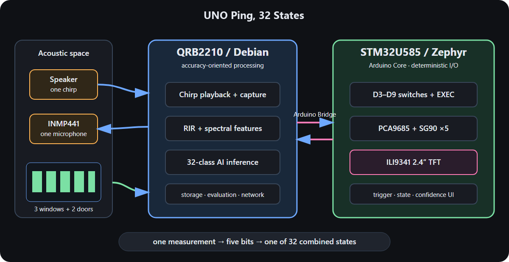

Software architecture
IchiPing UNO Q is one Arduino App Lab app (uno_q/app/) plus a small host-side audio worker (uno_q/audio/).

The two brains
| Part | Where | Responsibilities |
|---|---|---|
| Arduino sketch | STM32U585, Zephyr (uno_q/app/sketch/) | debounced switches and EXEC, PCA9685 servo control with explicit arming and fault latch, ILI9341 rendering |
| Python app | QRB2210, Debian, App Lab container (uno_q/app/python/) | EXEC request mailbox, capture requests, preprocessing, ONNX Runtime inference, baseline storage, evaluation commands |
| Audio worker | QRB2210 host, user arduino (uno_q/audio/runtime-audio-worker.py) | owns ALSA routes and the amplifier shutdown pin; plays the PRBS and records the microphone |
| Router Bridge | between sketch and Python | typed RPC calls and notifications |
The app container does not access the audio hardware. It writes a small request file into runtime/audio/; the worker runs safe-audio-test.sh, which checks the board identity and sound card, enables the routes, plays and records, then always turns the routes off and verifies the amplifier shutdown pin — also on errors and signals.
Bridge services (MCU)
| Service | Purpose |
|---|---|
get_hardware_status, get_physical_state, get_servo_state, get_switch_states | status and inputs |
set_servo_armed, set_servo_automation, move_servo_deg, test_servo_channel | servo control (disarmed and automation off after every reset) |
show_prediction, show_runtime_status, show_inference_unavailable, run_display_self_test | TFT |
set_inference_busy | blocks EXEC and servo sync while an inference runs |
The Python side provides on_infer_request (EXEC pressed) and on_runtime_status.
Inference flow
- EXEC is pressed; the MCU notifies Python with the requested state.
- Python asks the worker for one PRBS capture (2 s excitation, 3 s S32_LE recording).
- The capture is health-checked (duration, silence, clipping, right-slot leakage).
- The frame is aligned to the PRBS onset, decimated to 16 kHz and scaled ×16 to the original collector's int16 scale.
- A 1024-bin log-power spectrum minus the stored all-closed baseline, normalised per frame, goes to the ONNX model.
show_predictionupdates the TFT; stale results (servo state changed during capture) are rejected.
On the first EXEC with all switches closed, the app records three all-closed captures as the baseline.
TFT rendering
The TFT shows the predicted state (inf) and the actual commanded state (act) in the physical order c, BC, b, AB, a, coloured by observability, and a banner: Complete Success (blue), Conditional Success (green, the observable part is right) or Failure (red).
The renderer avoids flicker: the static frame is painted once, only changed digits are redrawn, and each digit and the banner are generated as a procedural sprite streamed through one SPI address window.
Evaluation mailbox
For automated data collection the app accepts commands in runtime/eval/command.json (arm, set_state, follow_switches, calibrate_baseline, disarm, status) and answers in result-<id>.json. The PC collector uses it over SSH/Wi-Fi.
Linux audio setup
The MI2S0 bus is not enabled by the stock image. uno_q/audio/ contains the Device Tree overlay (ichiping-mi2s0.dtso), the kernel patches used for the ALSA front end (native S32_LE, capture period alignment), the route script, the safe test runner and the offline tests. uno_q/audio/README.md describes building and installing them; installation requires root once. After that, every capture runs as a normal user in the audio and gpiod groups.